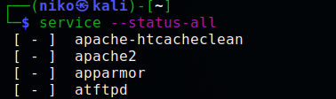
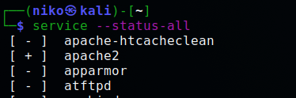
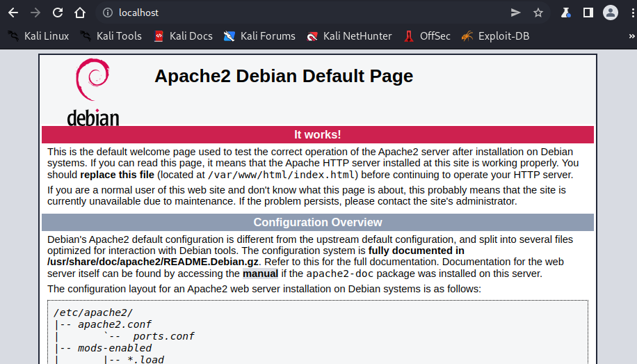

H3a
Asensin Apachen komennolla sudo apt-get install apache2, asennus hoitui sekunneissa. Tarkistin mitkä palvlut ovat päällä komennolla service --status-all; Apache2 edessä miinus merkki joka indikoi ettei ohjelma ole suoritustilassa.
Käynnistin pavelun komennolla sudo service apace2 start jonka jälkeen service -status-all näytti + merkkiä apachen kohdalla.
Selaimen osoiteriville kirjoitin localhost, jonka äjlkeen sivulle latautui Apachen "default page"
